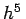
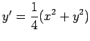
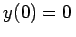
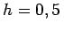
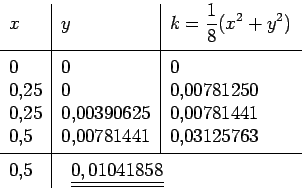

Inhalt Index DeskTop Bronstein

 Numerische Mathematik Integration gewöhnlicher Differentialgleichungen Anfangswertaufgaben Runge-Kutta-Verfahren
Numerische Mathematik Integration gewöhnlicher Differentialgleichungen Anfangswertaufgaben Runge-Kutta-Verfahren


Durch die Differentialgleichung y'(x)=f(x,y) ist in jedem Punkt (x0,y0) der Lösungskurve die Richtung ihrer Tangente gegeben. Das EULERsche Polygonzugverfahren verfolgt diese Richtung bis zum nächsten Interpolationspunkt. Beim RUNGE-KUTTA-Verfahren werden zusätzlich Punkte zwischen (x0,y0) und dem nächsten Interpolationspunkt (x0+h,y1) einbezogen. Durch eine geeignete Wahl dieser Zwischenpunkte bezüglich Anzahl und Lage erhält man eine höhere Genauigkeit von y1. Das im folgenden angegebene Rechenschema stellt ein Verfahren 4.Ordnung dar (s. Konvergenzordnung). Zum Vergleich: Das EULER-Verfahren ist ein Verfahren 1.Ordnung.
Zur genäherten Lösung der Anfangswertaufgaben (19.93) wird der Schritt von x0 nach x0+h wie folgt durchgeführt:
Die weiteren Schritte erfolgen nach demselben Schema. Der Fehler des RUNGE-KUTTA-Verfahrens gemäß (19.99) ist bei jedem Schritt von der Größenordnung , so daß bei geeigneter Wahl der Schrittweite eine sehr hohe Genauigkeit erzielt wird.
| Beispiel |
|
 mit . y(0,5) ist in einem Schritt, d.h. , zu bestimmen (s. die folgende Tabelle). Der auf 8 Dezimalen genaue Wert lautet 0,01041860. 
|